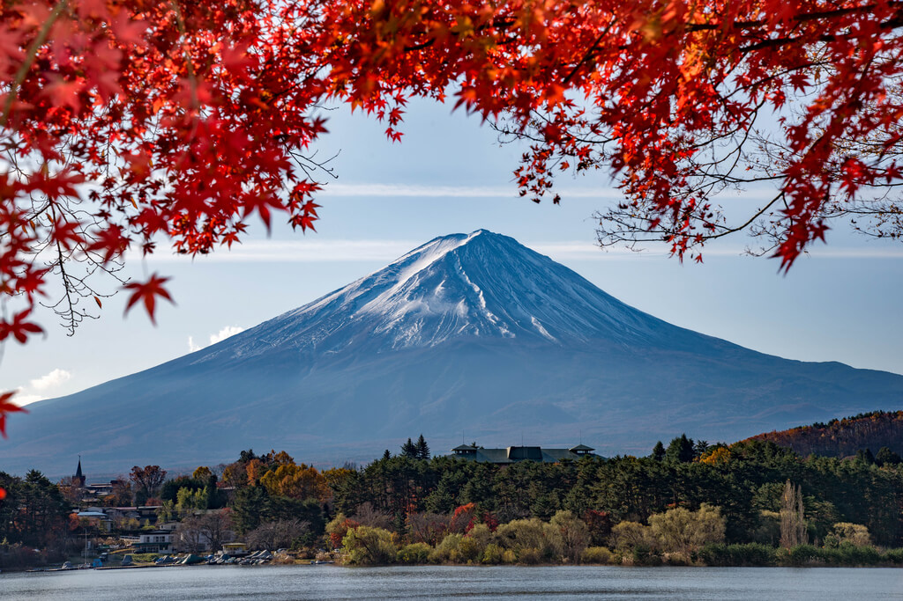

Discover Japan's Enchanting Destinations
Tap the Images to Unlock the Story!
Mount Fuji
Standing tall and serene, Mount Fuji is timeless symbol of Japan's natural beauty and cultural significance. As the sun rises, its snow-capped peak glows with a fiery brilliance, offering a once-in-a-lifetime experience for those who seek its splendor. A visit here isn't just a trip it's a pilgrimage.
Cherry Blossoms (Sakura)
Each spring, Japan transforms into a canvas painted with delicate pink and white hues as cherry blossoms bloom. From Tokyo's Ueno Park to Kyoto's Philosopher's Path, these fleeting flowers embody the beauty of life's impermanence. Join locals in the timeless tradition of *hanami* a celebration of spring's breathtaking arrival.
Himeji Castle
Perched on a hilltop, Himeji Castle's white walls gleam like the wings of a heron in flight. A symbol of elegance and strength, this UNESCO World Heritage site tells stories of samurai, resilience, and architectural genius. It's a window into Japan's storied past.
Itsukushima Shrine

On Miyajima Island, the red torii gate of Itsukushima Shrine seems to float gracefully upon the sea during high tide. This sacred site, blending natural beauty and spiritual reverence, offers a tranquil escape. Watching the gate at sunset feels like witnessing a dream come to life.
Arashiyama Bamboo Grove
In Kyoto, a mystical path weaves through the towering stalks of Arashiyama Bamboo Grove. The light dances between the leaves, creating an otherworldly ambiance that feels like stepping into nature’s cathedral. Every rustle of the bamboo invites you to breathe, reflect, and embrace serenity.